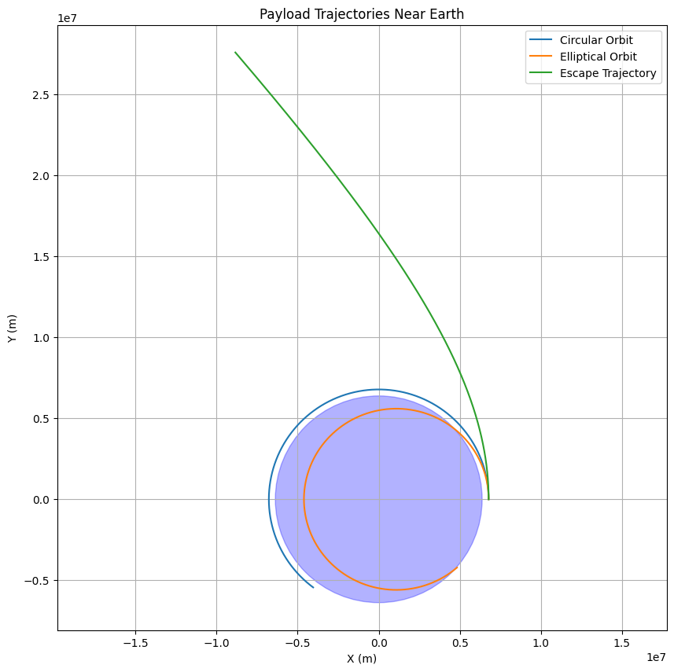

Trajectories of a Freely Released Payload Near Earth
Introduction
The motion of a payload released from a moving rocket near Earth is a fascinating problem that combines orbital mechanics, gravitational physics, and numerical analysis. When a rocket releases an object—whether a satellite, scientific instrument, or debris—its resulting trajectory is determined by initial conditions such as position, velocity, and altitude at the moment of release. Governed by Earth’s gravity, these trajectories can take various forms, including elliptical orbits, parabolic paths, or hyperbolic escape routes.
Understanding these trajectories is essential for space mission design, affecting everything from satellite deployment to reentry safety and interplanetary travel. This article explores the different possible trajectories of a freely released payload near Earth, performs a numerical analysis to compute its motion, and discusses the implications for orbital insertion, reentry, and escape scenarios. Additionally, we develop a Python-based computational tool to simulate and visualize these trajectories, providing both practical and theoretical insights into celestial mechanics.
Theoretical Background
Gravitational Forces and Orbital Mechanics
The motion of a payload near Earth is primarily governed by Newton’s Law of Universal Gravitation:
where:
- \(F\) is the gravitational force,
- \(G = 6.67430 \times 10^{-11} \, \text{m}^3 \text{kg}^{-1} \text{s}^{-2}\) (gravitational constant),
- \(M = 5.972 \times 10^{24} \, \text{kg}\) (mass of Earth),
- \(m\) is the mass of the payload,
- \(r\) is the distance from Earth's center.
For a freely falling payload, the acceleration is given by the second-order differential equation:
where:
- \(\mathbf{r}\) is the position vector relative to Earth's center,
- \(\mu = G M = 3.986 \times 10^{14} \, \text{m}^3 \text{s}^{-2}\) (Earth’s gravitational parameter),
- \(r = |\mathbf{r}|\) is the radial distance from Earth's center.
Energy and Trajectory Classification
The type of trajectory—elliptical, parabolic, or hyperbolic—depends on the specific orbital energy (\(\epsilon\)), which combines kinetic and potential energy per unit mass:
- Elliptical Orbit (\(\epsilon < 0\)) → The payload remains bound to Earth.
- Parabolic Trajectory (\(\epsilon = 0\)) → The payload escapes with minimum required energy.
- Hyperbolic Trajectory (\(\epsilon > 0\)) → The payload escapes Earth with excess velocity.
Kepler’s Laws and Trajectories
Kepler’s Laws further describe the motion of orbiting objects:
1. First Law: Payloads follow elliptical, parabolic, or hyperbolic paths, with Earth at one focus.
2. Second Law: The payload moves faster near Earth and slower at greater distances.
3. Third Law: The orbital period depends on the semi-major axis for bound orbits.
These laws help classify the payload’s motion based on its initial velocity and position, allowing mission planners to design orbital insertions, reentries, or escape trajectories.
Numerical Analysis and Simulation
To compute the payload’s path, we numerically solve the equations of motion. While analytical solutions exist for idealized cases, numerical methods allow greater flexibility for real-world conditions.
Initial Conditions
Consider a payload released at:
- Altitude: 400 km (typical for Low Earth Orbit (LEO)).
- Radial distance:
$$
r_0 = R_E + 400 \text{ km} = 6,378 \text{ km} + 400 \text{ km} = 6,778 \text{ km}
$$
- Initial velocity:
- 7.6 km/s → Circular orbit.
- 0.9 × 7.6 km/s → Elliptical orbit.
- 1.1 × 11.2 km/s → Escape trajectory.
Python Implementation
Below is a Python script to simulate and visualize the payload’s trajectory.
import numpy as np
import matplotlib.pyplot as plt
from scipy.integrate import odeint
# Constants
mu = 3.986e14 # Earth's gravitational parameter (m^3/s^2)
R_e = 6.378e6 # Earth's radius (m)
# Equations of motion
def equations_of_motion(state, t):
x, y, vx, vy = state
r = np.sqrt(x**2 + y**2)
ax = -mu * x / r**3
ay = -mu * y / r**3
return [vx, vy, ax, ay]
# Initial conditions
r0 = R_e + 400e3 # Initial radius (m)
v_circular = np.sqrt(mu / r0) # Circular orbit velocity
v_escape = np.sqrt(2 * mu / r0) # Escape velocity
# Scenarios
initial_conditions = {
"Circular Orbit": [r0, 0, 0, v_circular],
"Elliptical Orbit": [r0, 0, 0, 0.9 * v_circular],
"Escape Trajectory": [r0, 0, 0, 1.1 * v_escape]
}
# Time array
t = np.linspace(0, 3600, 1000) # 1-hour simulation
# Simulate and plot
plt.figure(figsize=(10, 10))
for label, ic in initial_conditions.items():
sol = odeint(equations_of_motion, ic, t)
x, y = sol[:, 0], sol[:, 1]
plt.plot(x, y, label=label)
# Plot Earth
earth = plt.Circle((0, 0), R_e, color='blue', alpha=0.3)
plt.gca().add_patch(earth)
plt.axis('equal')
plt.legend()
plt.title("Payload Trajectories Near Earth")
plt.xlabel("X (m)")
plt.ylabel("Y (m)")
plt.grid(True)
plt.show()

Results
- Circular Orbit (\( v = 7.6 \) km/s) → The payload follows a stable orbit.
- Elliptical Orbit (\( v = 0.9 \times 7.6 \) km/s) → The trajectory becomes elliptical, with a lower perigee.
- Escape Trajectory (\( v = 1.1 \times 11.2 \) km/s) → The payload follows a hyperbolic path, leaving Earth’s gravity.
The simulation visually confirms these trajectories, showing Earth as a reference point.
Mission Applications
Orbital Insertion
For a stable orbit (e.g., LEO), the payload’s velocity must match the required orbital speed. Too slow, and it falls back; too fast, and it escapes.
Reentry
A payload with suborbital velocity (\(v < v_{\text{circular}}\)) reenters Earth's atmosphere, requiring controlled descent for safe landings.
Escape Missions
A payload exceeding 11.2 km/s at 400 km altitude escapes Earth’s gravity—necessary for lunar or interplanetary missions.
Conclusion
The trajectory of a freely released payload depends on its initial velocity and Earth’s gravity. Using Newtonian physics, Kepler’s laws, and numerical simulations, we can accurately predict these paths. This analysis is essential for space missions, including satellite deployment, reentry, and interplanetary exploration. The Python simulation provided is a valuable tool for visualizing these dynamics, with potential extensions for atmospheric effects and multi-body interactions. 🚀✨